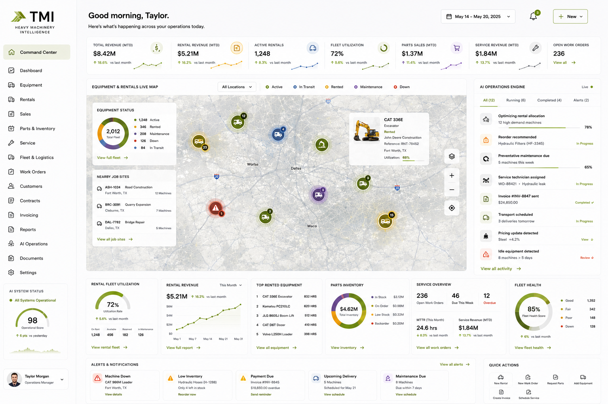

TMI builds the AI command center for heavy equipment dealers, rental companies, and machinery-intensive operations. Equipment tracking, predictive maintenance, rental fleet management, and parts inventory - all live, all connected.
Heavy machinery operations have more moving parts than almost any other industry - and less visibility into them. The machines are tracked by habit, not systems.
Hydraulic failures, wear patterns, maintenance gaps - every machine sends signals before it breaks. Most operations never see them until the machine is already idle and costing you by the day.
Which units are on rent, which are available, which are in for service - tracked across whiteboards, spreadsheets, and phone calls. At 2,000 machines, that's a full-time job just to know what you own.
A machine waits 6 days because a hydraulic filter is backordered. That's lost rental revenue, a frustrated customer, and a service tech sitting idle. Parts management shouldn't be reactive.
A live command center for every machine you own, every rental in the field, every open work order, and every AI action running in the background - built for heavy machinery operations.

Each system handles a different function. Together they give you the kind of operational control that used to require a team of people running reports all day.
Every machine - owned, rented, in transit, in service - tracked in real time. Location, utilization rate, status, and maintenance history all in one view.
Asset Tracking →AI monitors usage patterns and flags machines before they fail. Maintenance schedules auto-generated by actual machine hours, not calendar dates.
Predictive Maintenance →Rental contracts, availability, utilization, and return tracking managed automatically. Know your fleet health and revenue per unit without manual tracking.
Fleet Management →Parts levels monitored per machine type. Reorders triggered automatically before you run short. No more emergency freight charges because someone forgot to reorder hydraulic filters.
Inventory Management →Service requests logged, techs assigned, parts pulled - all from one screen. Work order history tied to each machine so you know exactly what's been done and what's due.
Field Data & Work Orders →Revenue by machine, margin per rental, idle time by location - all live. Your AI operations engine surfaces alerts, recommends actions, and keeps your team ahead of problems.
Analytics & Reporting →Custom-built around your operation - not configured from a SaaS template. Each system is designed around how your equipment business actually runs.
Real-time location, status, and utilization for every machine in the fleet.
Machine-hour-based maintenance scheduling with AI failure prediction.
Contracts, availability, utilization, and returns tracked without manual effort.
Stock monitored by machine type. Auto-reorder before shortages hit the shop floor.
Service requests, tech assignment, parts pulled, and history - all per machine.
Equipment deliveries, pickups, and moves coordinated and tracked automatically.
Rental invoices generated on schedule. Service invoices at job close. Zero manual billing.
Rental terms, renewals, and expiries tracked and enforced automatically.
Operator certifications, machine inspections, and regulatory docs - never let one lapse.
Machine coverage, incident reporting, and claim tracking managed in one system.
Telematics data surfaced to your command center - idle time, fuel use, fault codes.
Revenue per unit, margin per rental type, utilization trends - live, not end-of-month.
Not a software demo. Not a consultant deck. A real system installed and running in your operation.
30 minutes. We map your current operation, find where the gaps are costing you most, and tell you exactly what to build first.
We design and build every system around how your business actually runs. No templates. No generic software. Built for you.
We install, train your team, and hand over a system that runs without us in the room. Most operations are live in 6-8 weeks.
Every piece of equipment tracked by location, utilization, and status in real time. Know what's on which site, what's idle, and what's overdue for service without making calls.
Learn more →Service intervals, inspection schedules, and wear indicators tracked automatically. Maintenance scheduled before failures happen, not after a machine goes down mid-job.
Learn more →Equipment assigned to jobs based on specs, availability, and operator certification. Schedule changes pushed in real time. No dispatcher managing it manually all day.
Learn more →Invoices generated from tracked hours and usage data automatically. No billing based on paper tickets. No invoice lag between job completion and payment.
Learn more →One call. We walk every process, bottleneck, and gap in your workflow. Nothing gets assumed. Nothing gets skipped.
Custom intelligent infrastructure built specifically for how you operate. Done for you. 14 days max. No templates. No generic software.
Your team gets trained. The system runs. We stay on for support. You never deal with a generic software vendor again.
Actual operating hours tracked per machine automatically. Utilization rates surface what is running hard and what is sitting idle.
Service intervals triggered by hours, not calendar date. PMs get scheduled before failures happen. Unplanned downtime drops.
Tracks operator certifications per machine type. Assignments only go to certified operators. Compliance is automatic.
Tracks wear components, critical spare inventory, and supplier lead times per machine. You stop finding out a part is missing when it is needed.
Tracks which machines are where, their availability, and scheduled returns. Deployment decisions are based on real data, not guesses.
For rental fleets: utilization, rental agreements, and billing managed automatically. Revenue gaps become visible.
Hours get logged automatically at the machine level - from telematics if available, or from operator job records. Utilization rates surface in real time. You see which assets are working and which are sitting.
Service intervals are triggered by operating hours, not calendar date. The system schedules PMs automatically and alerts maintenance staff before the interval hits. Unplanned downtime drops significantly.
Yes. Each operator has a certification profile tied to machine types. Assignment systems only route certified operators to the relevant equipment. Compliance is built in, not checked manually.
Critical parts get tracked per machine. Reorder alerts fire when stock drops below minimum levels. Lead times are factored in automatically so parts arrive before you need them.
14 days from the discovery call to deployment, including integration with existing telematics or equipment management systems.
Tell us how many machines you're running and how you're currently tracking them. We'll show you where automation creates the most leverage.
Every engagement starts with the Complete Audit. We map exactly how your business runs, then delete the software you don't use, connect what's left, and build the systems and AI that run it. You own what we build.
We audit your stack and cut the software nobody uses. Less to manage and smaller bills, from day one.
We wire what is left into one operational layer, so nothing lives in a silo and the whole operation is visible.
We build the systems and AI that run the work you used to run by hand. Deployed, your team trained, handed over.
One door in. Every engagement starts with the Complete Audit: a detailed map of your operation, your Intelligence Score, and the 30-day plan to fix it.
Take the intelligent company audit →Related Industries